Отчёт о разработке прототипа на движке o2 — от концепта до играбельной сборки с тестами. 06.08.2026
По переданному концепт-арту и описанию механик собран прототип тактической merge-головоломки: защита замка от волн драконов. Поле 7×10 (3 верхних ряда — «Небо» драконов, 7 нижних — оборона), пошаговый цикл со слияниями юнитов, обратной гравитацией, камнями, огнём и бустерами, плюс мета-экран Замка (казармы, кузница, экономика).
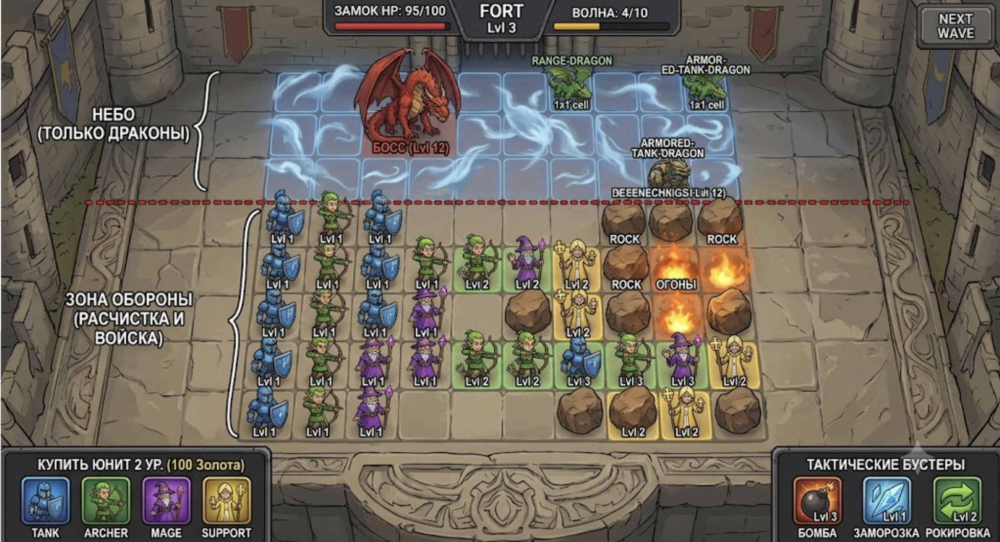
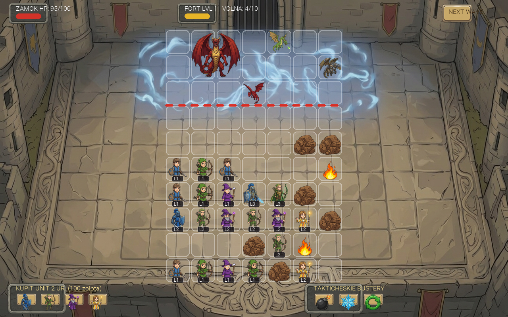
Сгенерировано 24 изображения в стиле концепта (референс через ref_paths): фон боя получен
edit_image-ом из самого концепта (удалены юниты и UI — идеальное совпадение композиции), фон замка,
12 спрайтов юнитов (4 класса × 3 уровня с видимой прогрессией экипировки), 5 драконов, камень, огонь,
иконки бустеров и валют, панель, кнопка, здания казарм и кузницы.
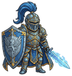
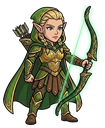
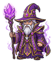
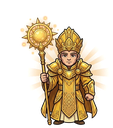
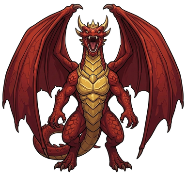
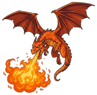
Обработка: трим альфы и даунскейл под игровые размеры, процедурные элементы (рамка клетки, полосы, пунктир линии фронта) — PIL-скриптом. Дефект прозрачности у камня (непрозрачный белый фон после двойного рендера) вычищен флуд-филлом от краёв. Мок-композиция экрана из готовых спрайтов сверена с концептом до начала кода.
Три слоя со строгим разделением (Work/Architecture.md):
| Слой | Файлы | Ответственность |
|---|---|---|
| C++ сборка сцены | DragonDefenseBootstrap, DragonLayout.h |
Кодом строит оба экрана: слои сцены, FittedSize-камера 1280×800, фоны, 70 клеток, HUD на
виджетах (Button/Image/Label), запускает JS. Сцена-бутстрап сохраняется в
DragonDefense.scn тоже кодом. |
| C++ мост ввода | DragonInputComponent |
@SCRIPTABLE-методы: клик, правый клик, курсор в мировых координатах. |
| JS модель | DragonModel.js |
Чистая логика без единого вызова движка: merge с каскадом и капом казарм, гравитация+спавн, атаки классов, драконы, огонь, камни, бустеры, волны, экономика. Свой LCG — детерминизм в тестах. Тестируется headless. |
| JS вью/контроллер | DragonGame.js |
onClick-обработчики кнопок, вью-акторы по id модели с твинами позиций, мини-HP-бары, эффекты, тексты HUD. Клетки поля — через мировые координаты клика. |
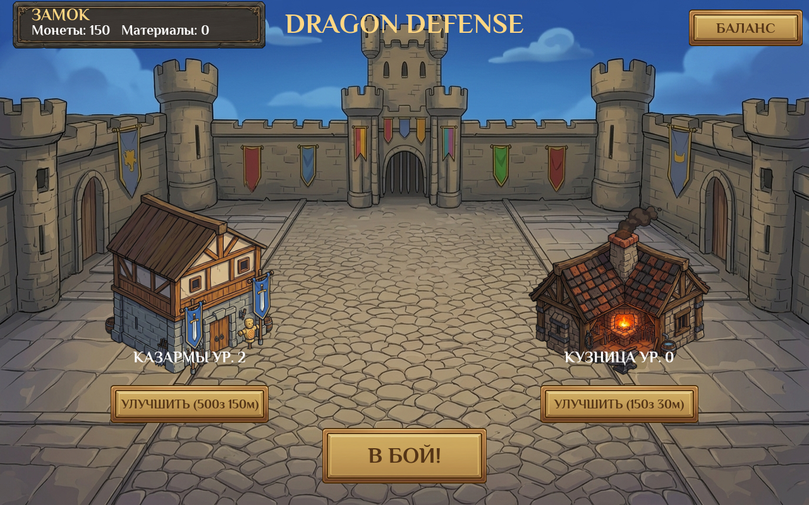
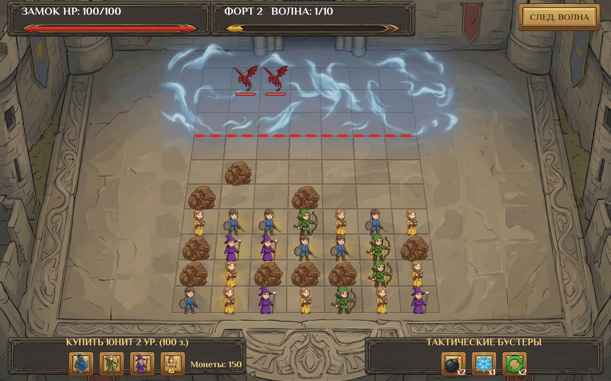
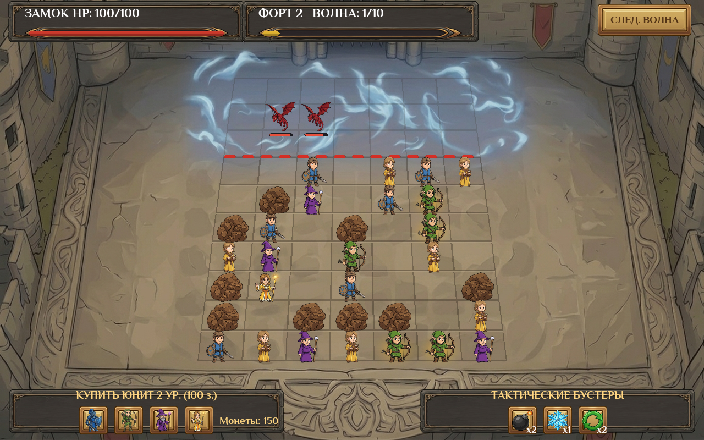
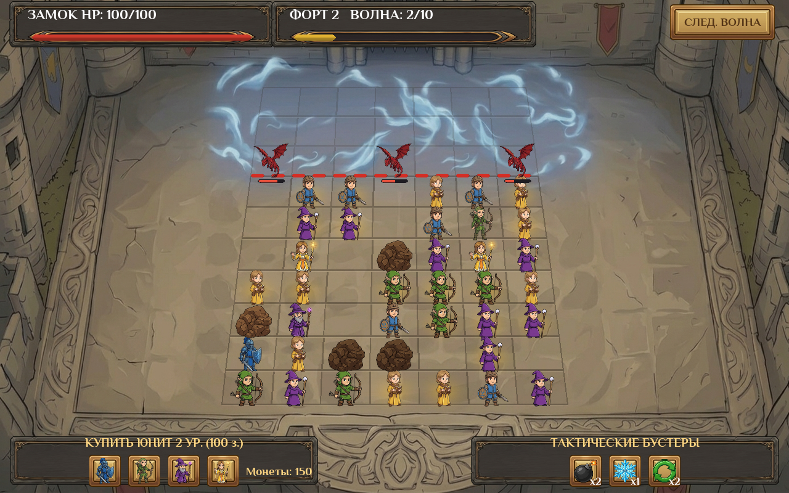
GetChild("../...") от общего корня; кнопки — поле onClick у Button.DRAGON_GAME = this) молча валило OnStart — исправлено на
globalThis.*; найдено по логам ReferenceError.seed % 4 выдавал одних танков —
на скриншоте всё поле было синим. Взяты старшие биты сида.ImageComponent нет
SetDrawingDepth в JS).Button (слои back/icon/caption) + Image +
Label; правило зафиксировано в CLAUDE.md.По фидбеку владельца интерфейс и поле доведены отдельным проходом:
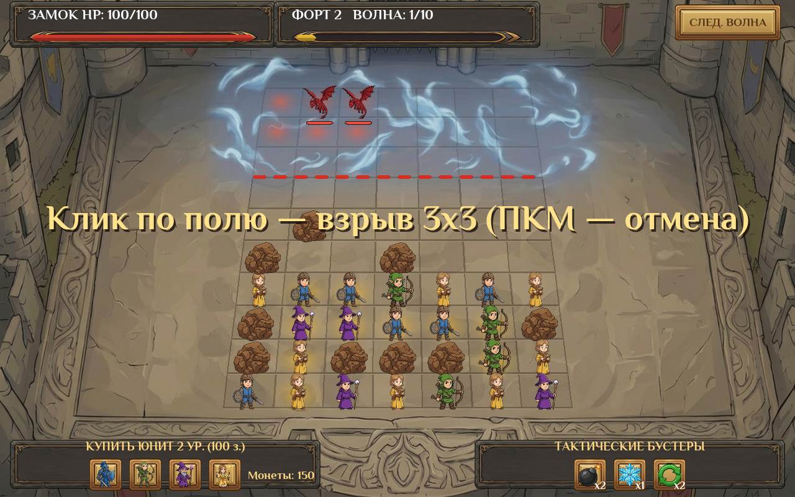
Отдельный экран настройки баланса (кнопка «БАЛАНС» в замке): 13 параметров с кнопками −/+
(HP замка, число волн, камни, стартовые ряды, покупка юнита, заряды и сила бустеров, урон огня)
и тумблеры включения типов — 4 класса юнитов и 5 типов драконов. Настройки живут в модели
(tuning, enabledUnits, enabledDragons) и применяются к следующему бою:
выключенные классы не спавнятся и не покупаются, выключенные драконы подменяются в волнах первым включённым.
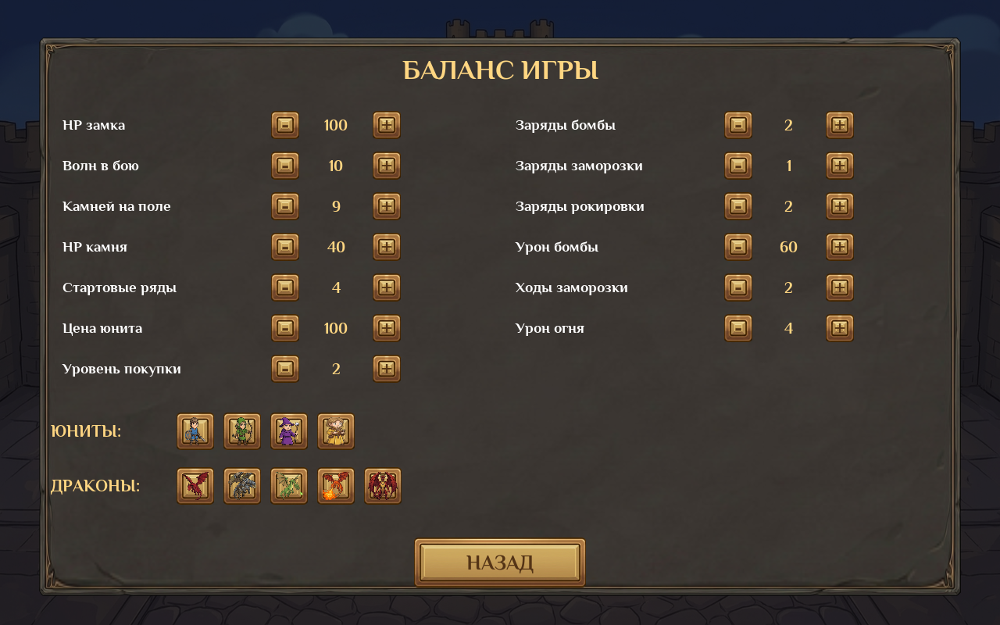
Work/GDD.md — гейм-дизайн документ; Work/Architecture.md — архитектура; Work/worklog.md — подробный лог.Sources/Game/DragonDefense/ — C++ (бутстрап, ввод, лэйаут).Assets/Scripts/DragonDefense/ — DragonModel.js, DragonGame.js.Assets/DragonDefense/ — спрайты и сцена; Work/Art/ — исходники арта.Sources/GameTests/DragonModelTests.cpp, DragonSceneTests.cpp, Sources/GameUITests/DragonDefenseUITests.cpp.